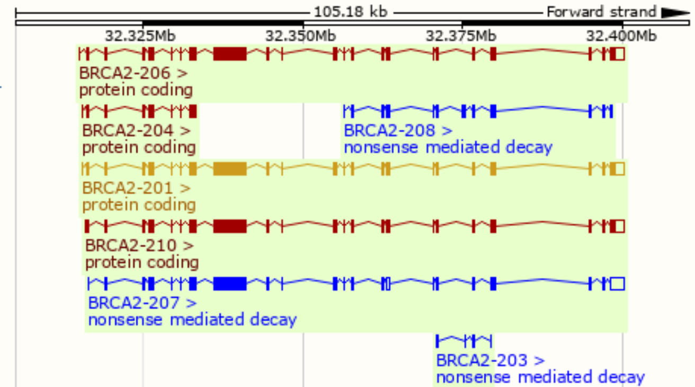
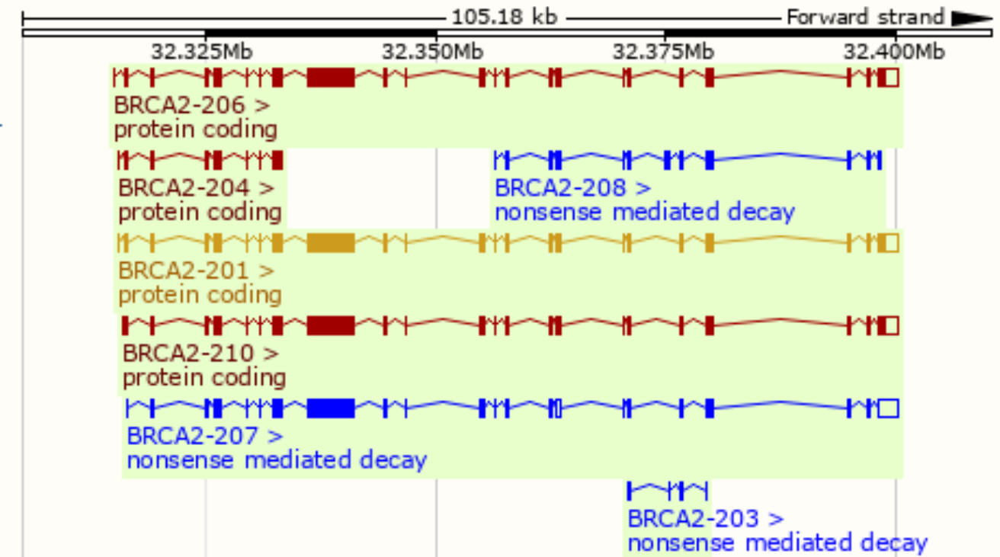
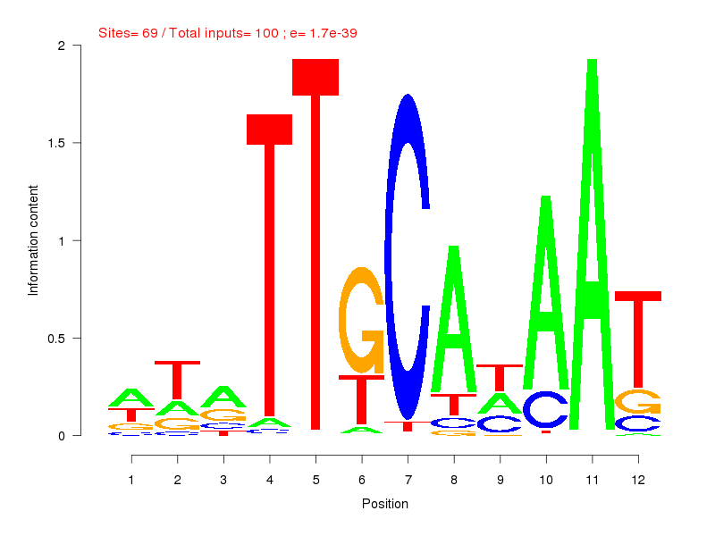
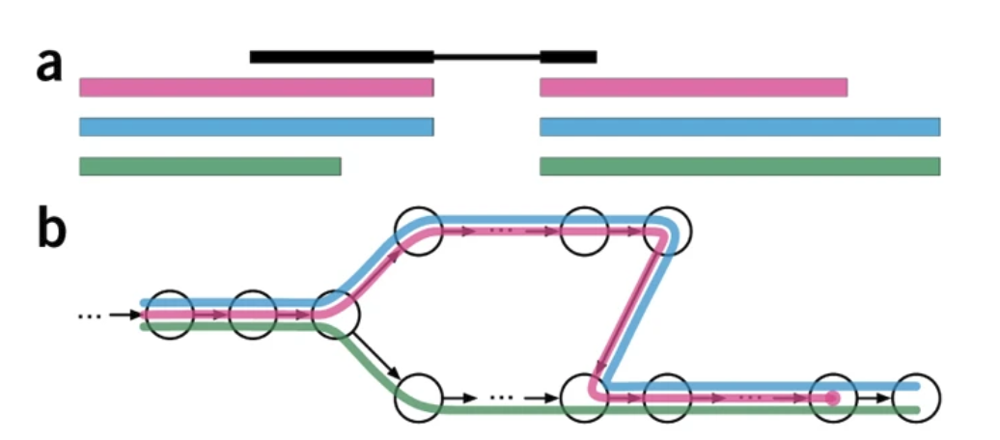
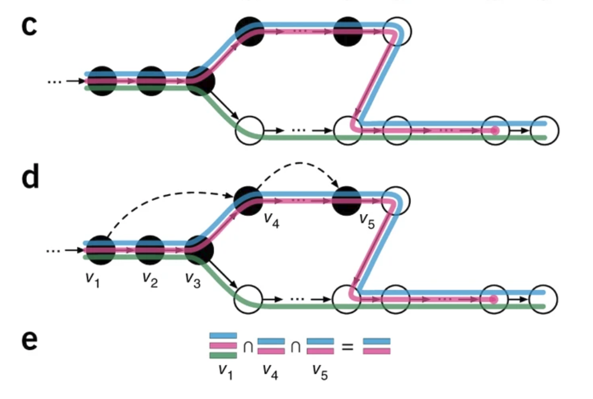

## {{ page.title }}
---
## Lecture overview
- RNA quantification with EM
- RNA pseudoalignment
- K-mer counting
- Hashing and MinHash
- Bloom filters
---
### Intro to RNA-seq
 ---
### Transcript models

RNA analysis may include:
- de novo assembly
- pre-existing fixed set for quantification
---
### Review of EM
- Expectation Maximization is an algorithm to find Maximum Likelihood Estimates
- It is used in situations where there is missing data
- Missing data may be either intentional or unintentional
- Intentional missing data is used for mixture models
---
### EM for mixture models
$$
P(\mathbf{X}) = \prod_{i=1}^{N} \sum_{k=1}^{K} \pi_k P(X_i=x | \theta_k)
$$
$P(\mathbf{X})$ is the joint probability of observed data $\mathbf{X}$
$\pi_k$ are the mixture parameters
$\theta_k$ are the model parameters for each component
---
### Transcript models

RNA analysis may include:
- de novo assembly
- pre-existing fixed set for quantification
---
### Review of EM
- Expectation Maximization is an algorithm to find Maximum Likelihood Estimates
- It is used in situations where there is missing data
- Missing data may be either intentional or unintentional
- Intentional missing data is used for mixture models
---
### EM for mixture models
$$
P(\mathbf{X}) = \prod_{i=1}^{N} \sum_{k=1}^{K} \pi_k P(X_i=x | \theta_k)
$$
$P(\mathbf{X})$ is the joint probability of observed data $\mathbf{X}$
$\pi_k$ are the mixture parameters
$\theta_k$ are the model parameters for each component
Latent indicator/responsibility variable $Z_{ik}$ is introduced to assign data $i$ to component $k$.
---
### EM in RNA-seq
- Observed data is a set of aligned reads $R$
- Latent mixture vars $Z$ assigns $R_j$ to transcript $T_i$
- We want to infer expression of each transcript $\theta_i$
- See: [Li 2010](https://doi.org/10.1093/bioinformatics/btp692) and [Li 2011](https://doi.org/10.1186/1471-2105-12-323)
#### Expectation (E-step)
Guess assigning reads to transcripts ($E[Z]$)
#### M-step
Calculate expression values ($\Theta$) for each transcript
---
### Expectation (E-step)
Guess assigning reads to transcripts ($E[Z]$)
#### E-step detail
$E[Z] = P(Z=1|r,\theta_{i}^{old})$
- $Z_{ij}$ is the probability that read $j$ was drawn from transcript isoform $i$.
- $Z$ is huge ($|R| \times |T|$), but we can use alignment to constrain it (fix some at $0$).
---
#### E-step detail
Just assign the read to the transcript according to its abundance estimate $\theta_i$
$E[Z] = P(Z=1|r,\theta_{i}^{old})$
$E[Z_{ij}] = \frac{\theta_i^{old}}{\sum_{i|Z_{ij}\not=0}{\theta_i^{old}}}$
- Uniquely aligning reads are assigned to 1 isoform, $E[Z_{ij}]=1$
- Multi-aligning reads are assigned proportionally to the expression estimates $\Theta$, for compatible transcripts.
---
### M-step
Calculate expression values ($\Theta$) for each transcript
$\argmax_{\Theta} \cal L(\theta_{i} | Z, r)$
#### M-step detail
- We want to infer $\Theta = [\theta_1, \theta_2, ..., \theta_n]$
- $\theta_i$ measures expression for isoform $i$
$\theta_i^{new} = \frac{\sum_j^R{Z_{ij}}}{N}$
---
### Summary of EM for RNA-seq
E-step: Assigning reads to transcripts ($E[Z]$)
$E[Z] = \frac{\theta_i^{old}}{\sum_{i}{\theta_i^{old}}}$
M-step: Calculate expression ($\Theta$) for each transcript
$\theta_i^{new} = \frac{\sum_j^R{Z_{ij}}}{N}$
Traditionally uses read-transcript alignments
---
# K-mers
---
### k-mers: subsequences of length *k*
3-mers

2-mers

---
How many 7-mers are there
in a sequence with $l=11$ bases?
$x = l-k+1 = 5$
```
|ABCDEFGHIJK|
|1-----7 | 1
| 1-----7 | 2
| 1-----7 | 3
| 1-----7 | 4
| 1-----7| 5
```
This is total k-mers, not unique k-mers
---
### Exponential growth
$4^k$
```
> cbind(k=seq(1,20), combinations=4^seq(1, 20))
k combinations
[1,] 1 4
[2,] 2 16
[3,] 3 64
[4,] 4 256
[5,] 5 1024
[6,] 6 4096
[7,] 7 16384
[8,] 8 65536
[9,] 9 262144
[10,] 10 1048576
[11,] 11 4194304
[12,] 12 16777216
[13,] 13 67108864
[14,] 14 268435456
[15,] 15 1073741824
[16,] 16 4294967296
[17,] 17 17179869184
[18,] 18 68719476736
[19,] 19 274877906944
[20,] 20 1099511627776
```
---
Human chromosome 1 has 248,956,422 bp.
> Assuming a random distribution of 4 bases, what is the expected count of a given 7-mer on human chromosome 1?
---
$l = 248,956,422$ size of chr1
$l-k+1 = 248,956,416$ total 7-mers in chr1
$4^7 = 16384$ possible 7-mer types
$ 248,956,416 / 16384 \approx \mathbf{15195} $
---
## Kmers and motifs
K-mer

Motif

- A k-mer is like a simplified motif with no weights
- K-mers are faster to compute and require less data
- K-mers represent a single instance, rather than a set
---
## Applications of K-mers
- Alignment seeds (fast RNA counting)
- Counting for relationships (e.g. metagenomics)
- Dinucleotide/codon analysis, background models
- Sequence assembly (De Bruijn graphs)
- Simplified transcription factor binding
- RNA pseudoalignment
---
## K-mer Counting

graph TD
GATTACAGATTCAG-->GAT;
GATTACAGATTCAG-->ATT;
GATTACAGATTCAG-->TTA;
GATTACAGATTCAG-->TAC;
GATTACAGATTCAG-->ACA;
GATTACAGATTCAG-->ATT;
GATTACAGATTCAG-->CAG;
GATTACAGATTCAG-->AGA;
GATTACAGATTCAG-->TTC;
GATTACAGATTCAG-->TCA;
GATTACAGATTCAG-->CAG;
GAT-->n([1]);
ATT-->n2([2]);
TTA-->n3([1]);
TAC-->n4([1]);
ACA-->n5([1]);
CAG-->n6([2]);
AGA-->n7([1]);
TTC-->n8([1]);
TCA-->n9([1]);
K-mer counting converts a sequence into a vector

graph LR
GATTACAGATTCAG-->n1["1 2 1 1 1 1 2 1 1 1"];
CTGAGGACTCGACT-->n2["2 1 0 0 2 2 3 2 2 1"];;
---
Remember: $4^k$
```
> cbind(k=seq(1,20), combinations=4^seq(1, 20))
k combinations
[8,] 8 65536
[9,] 9 262144
[10,] 10 1048576
[11,] 11 4194304
[12,] 12 16777216
[13,] 13 67108864
[14,] 14 268435456
[15,] 15 1073741824
[16,] 16 4294967296
[17,] 17 17179869184
[18,] 18 68719476736
[19,] 19 274877906944
[20,] 20 1099511627776
```
High $k$ $\rightarrow$ high-dimensional vectors, sparsity
---
### Hashing
> A hash function maps an object to a finite space
- must be deterministic
- should be very fast to compute
- should reduce collisions
Uses of hash functions
1. Hash table keys
2. Evaluating similarity (or identity)
3. Cryptography
---

---
### Hash tables
- provide $O(1)$ complexity for item access
- Can store large objects for lookup with a key
---
### Cryptographic hash function
- a subset of hash functions with particular purposes:
- designed to go one way (hard to de-hash)
- designed to avoid collisions
- relies on the avalanche effect (small change in inputs leads to large change in output)
---
### md5 algorithm- "Message Digest"
In 2011, the Internet Engineering Task Force (IETF) [advised in this document](https://tools.ietf.org/search/rfc6151) that
> The published attacks against MD5 show that it is not prudent to use MD5 when collision resistance is required.
---
## MinHash
MinHash uses hashing to determine similarity between two sets very quickly.
Jaccard index measures similarity between two sets
$$
J(A,B) = \frac{|A \cap B|}{|A \cup B|}
$$
Computing can be time-consuming for large sets
MinHash estimates the Jaccard index rapidly, using hashing to avoid computing intersection and union
---
### MinHash
$U$ is the universe of elements
Hash function $h$ maps set elements to unique integers
$h(x): U \rightarrow \mathbb{Z}$
Given a subset $S \subset U$, $h_{min}(S)$ is the minimum hash value (integer) $h(e_i)$ for each element $e_i \in S$.
---
$h_{min}(A) = h_{min}(B)$
if and only if the element with minimum hash value in $U = A \cup B$ is also in $A \cap B$.
The probability of this is $J(A,B) = \frac{|A \cap B|}{|A \cup B|}$.
So $P(h_{min}(A) = h_{min}(B))$ is an estimator of $J$.
But we need more than one draw:
- multiple hash functions
- take the $n$ lowest as the MinHash *signature* or *sketch*
---
MinHash has been used for fast comparisons of DNA sequences with k-mers.
- Metagenomics ([Ondov 2016](https://doi.org/10.1186/s13059-016-0997-x))
- Sourmash ([Brown 2016](https://doi.org/10.21105/joss.00027))
- Phylogenetics ([Moi 2020](https://doi.org/10.1371/journal.pcbi.1007553))
- Genome assembly ([Berlin 2015](https://doi.org/10.1038/nbt.3238) and [Koren 2017](https://doi.org/10.1101/gr.215087.116 ))
---
## Bloom filters
- Probabilistic membership testers using hash tables
- Fast and memory efficient
- Guarantee an item *is not* in the set, but not if it is (false positives allowed)
- Elements cannot be removed from the set
---
### Bloom filter components
1. A bit vector $F$ of length $l$ (size of the filter)
2. $k$ hash functions $h_i(x): U \rightarrow \mathbb{Z}$, $i \in 1, 2, ..., k$, which map objects in the universe $U$ to integers $\mathbb{Z}$ in $(0, l]$.
Parameters:
- Size $l$: how many elements in the bit vector?
- Number of hash functions
- Hash functions themselves
---
### Bloom filter procedure: add
A Bloom filter represents a set of elements $S \subset U$
To add an element $e$:
1. Compute the $k$ hash functions, $h_i(e), ...$
2. Set $F[h_i(e)] = 1$ for $i \in 1:k$.
---
### Bloom filter procedure: test
To test for presence of an element $e$:
1. Compute the $k$ hash functions, $h_i(e), ...$
2. Test $F[h_i(e)] \overset{?}{=} 1$ for $i \in 1:k$.
3. if $\forall i \in [1, k]: F_i=1$, then $e \overset{?}{\in} S$.
Otherwise, $e \not\in S$.
---

---
## A basic hash function
$h(x): U \rightarrow \mathbb{Z}$, $\mathbb{Z} \in (0, l]$
```R
hashfunc = function(d) {
hash = 0
r = as.integer(charToRaw(d)) # convert char to int
for (item in r) {
hash = hash * 7 + item
}
hash %% 1024
}
```
---
## Hash function considerations
- uniformity of hash values
- more functions affects speed, accuracy, and fill rate
[Kirsch-Mitzenmacher optimization](https://www.eecs.harvard.edu/%7Emichaelm/postscripts/tr-02-05.pdf)
Given 2 hash functions $h_1(x)$ and $h_2(x)$, simulate additional values with $g_i(x) = h_1(x) + i * h_2(x)$, $i \in [0, k-1]$ for $k$ additional hash functions.
---
### Bloom filters in practice
- RNA-seq quantification ([Zhang 2014](https://doi.org/10.1093/bioinformatics/btu288))
- Pre-alignment species filtering ([Chu 2014](https://doi.org/10.1093/bioinformatics/btu558))
- Single-cell transcriptome assembly ([Nip 2020](https://doi.org/10.1093/10.1101/gr.260174.119))
- Large-scale transcript searching ([Solomon 2016](https://doi.org/10.1038/nbt.3442))
- Genome assembly ([Jackman 2017](10.1101/gr.214346.116 ))
- Review of [Sketching and Sublinear Data Structures in Genomics](https://www.annualreviews.org/doi/abs/10.1146/annurev-biodatasci-072018-021156)
---
## RNA Pseudoalignment
Quantifying expression...
- only requires an assignment of reads to transcripts
- therefore doesn't require a complete alignment
- could be sped up by assigning reads without computing an alignment
---
## RNA Pseudoalignment
Build index:
1. de Bruijn graph
2. contigs
3. k-mer index
Pseudo-align reads:
1. Contig lookup
2. Intersection
---
Transcriptome de Bruijn graph (T-DBG)

---
### Kallisto

- each node corresponds to a k-mer (default k=31)
- isoforms are overlaid on the graph
---

- linear stretches with the same isoforms are 'contigs'
- Build Index: A hash table maps the K-mer to contigs
Align:
1. Look up compatibility class for each k-mer in read
2. Intersect them.
---
### Quantify
$$
\cal L(\alpha) \propto \prod_{r \in R} \sum_{t \in T} y_{rt} \frac{\alpha_t}{l_t}
$$
reads $r \in R$,
transcripts $t \in T$,
compatibility matrix $y_{rt}$,
expression levels $\alpha_t$ for transcript $t$ with length $l$
---
## Pseudoalignment summary
Assign reads to transcript with fast k-mer hash tables.
Use EM to iteratively compute assignments $Z$ (E-step)
Then maximize by computing expression levels $\Theta$